Nguồn cung linh hoạt
Chủ động phối hợp theo tình hình nguyên liệu và kế hoạch đơn hàng.
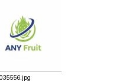
ANY FruitDRAGON FRUIT · VIETNAMTỪ VÙNG NGUYÊN LIỆU VIỆT NAM
Kết nối vùng trồng, quy trình sơ chế và đóng gói để đồng hành cùng đối tác bằng sự chỉn chu và minh bạch.
ĐỐI TÁC THANH LONG TẠI VIỆT NAM
ANY Fruit là đơn vị hoạt động trong lĩnh vực thu mua, sơ chế và đóng gói thanh long tại Việt Nam. Chúng tôi kết nối vùng nguyên liệu với quy trình xử lý cẩn thận, hướng đến chất lượng ổn định và sự phối hợp minh bạch cùng đối tác.
Mỗi đơn hàng được tiếp cận bằng tinh thần trách nhiệm, trao đổi rõ ràng và sự quan tâm đến yêu cầu riêng của khách hàng.
Tìm hiểu cơ hội hợp tác ↗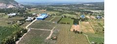
Chủ động phối hợp theo tình hình nguyên liệu và kế hoạch đơn hàng.
Quan tâm đến độ tươi, khâu phân loại và sự đồng đều của sản phẩm.
Trao đổi rõ yêu cầu, quy cách đóng gói và kế hoạch giao nhận.
TƯƠI NGON · ĐẶC TRƯNG VIỆT NAM
Tùy theo mùa vụ và yêu cầu thị trường, ANY Fruit phối hợp lựa chọn sản phẩm và quy cách phù hợp với từng đơn hàng.
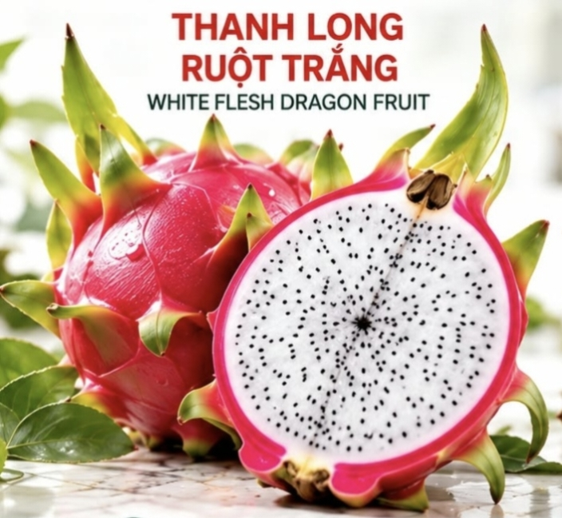
01 / WHITE FLESHVị ngọt thanh, thịt quả tươi giòn và hình thức đặc trưng.
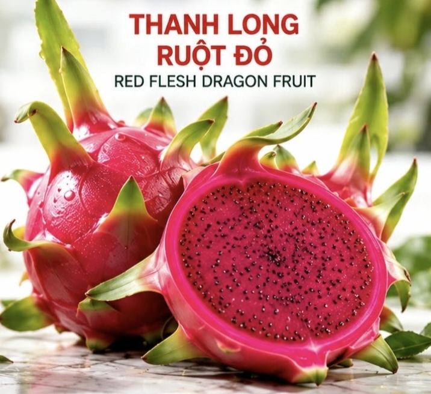
02 / RED FLESHMàu ruột đỏ nổi bật, hương vị đậm đà và giàu sức hút.
* Quy cách, phân loại và phương án đóng gói sẽ được xác nhận theo yêu cầu cụ thể của từng đơn hàng.
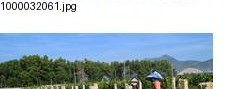
03 / CULTIVATION AREA
Chúng tôi phối hợp cùng vùng trồng tại khu vực Lâm Đồng và các đối tác cung ứng, chú trọng sự chủ động, truy xuất thông tin lô hàng và trao đổi rõ ràng trong từng giai đoạn.
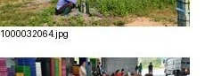
CƠ SỞ THỰC TẾ · ĐỘI NGŨ THỰC TẾ
Từ tiếp nhận nguyên liệu đến phân loại và đóng gói, đội ngũ phối hợp theo quy trình làm việc rõ ràng. Kế hoạch sản xuất và khối lượng đơn hàng được trao đổi để phù hợp với nguồn cung thực tế.
RÕ RÀNG TRONG TỪNG BƯỚC
Quy trình được điều phối theo đặc tính sản phẩm và yêu cầu của từng đơn hàng. Chi tiết thực hiện được thống nhất trước khi triển khai.
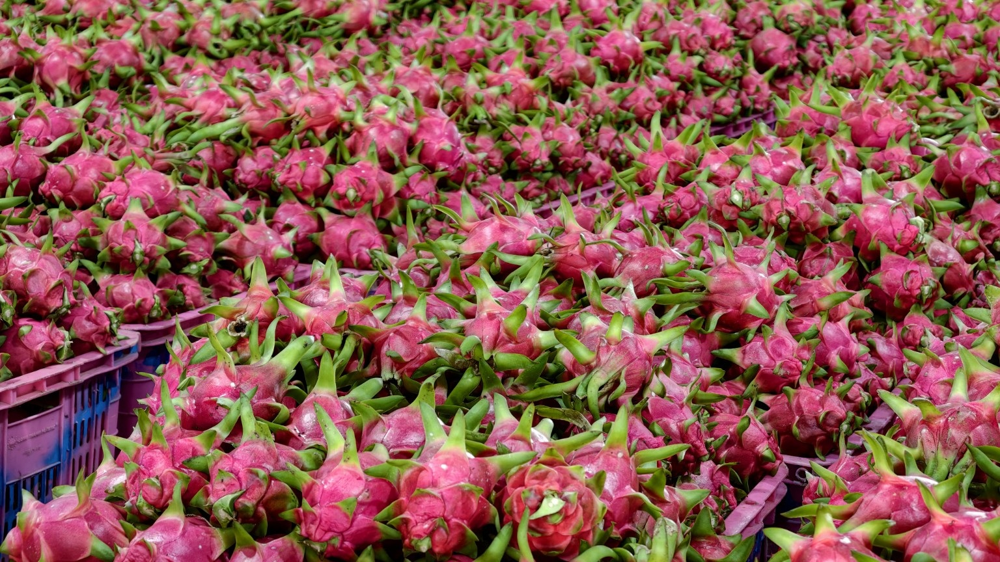
01Tiếp nhận nguyên liệu và kiểm tra ban đầu.
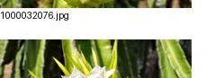
02Lựa chọn, phân loại theo tiêu chí đã thống nhất.
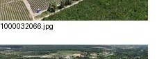
03Làm sạch và xử lý cẩn thận theo quy trình.
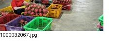
04Đóng túi theo quy cách của đơn hàng.
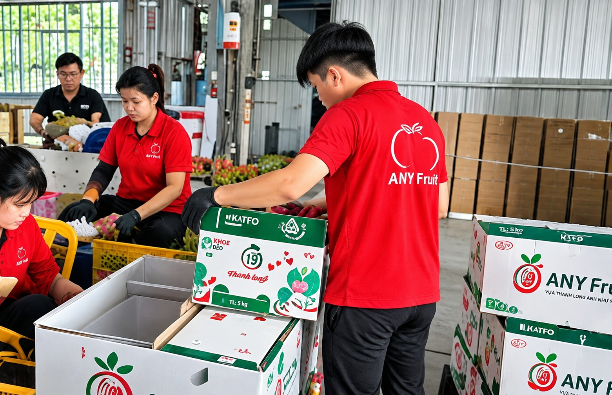
05Sắp xếp và đóng thùng phù hợp yêu cầu.
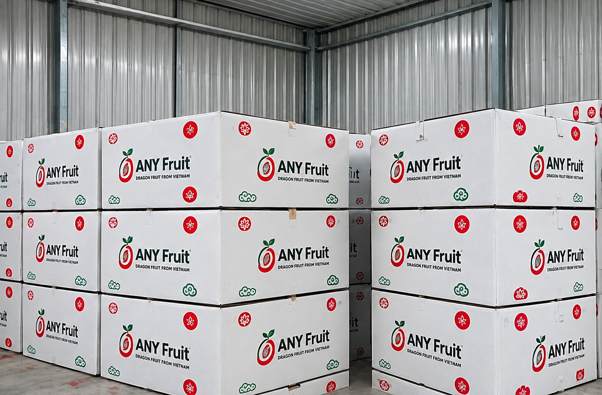
06Phối hợp phương án bảo quản theo kế hoạch giao nhận.
Chuẩn bị hàng và phối hợp bàn giao theo lịch.
06 / OUR COMMITMENT
Chúng tôi hướng đến mối quan hệ hợp tác bền vững bằng sự chỉn chu trong công việc, trao đổi minh bạch và tinh thần cùng giải quyết vấn đề.
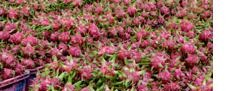
KẾT NỐI VỚI ANY FRUIT
Liên hệ với chúng tôi để trao đổi về sản phẩm, quy cách đóng gói và nhu cầu hợp tác.
Gửi email cho chúng tôi ↗THÔNG TIN DOANH NGHIỆP
ANH NHU Y IMPORT EXPORT LIMITED LIABILITY COMPANY
Tổ 5, Thôn 7, Xã Hàm Thuận, Tỉnh Lâm Đồng, Việt Nam